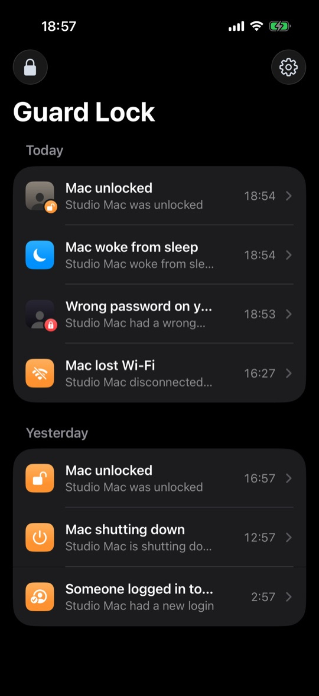
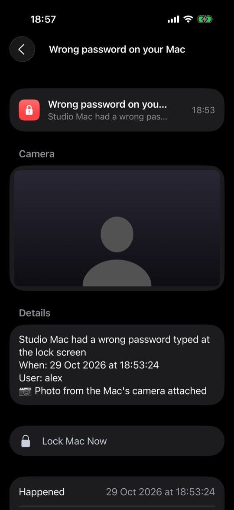
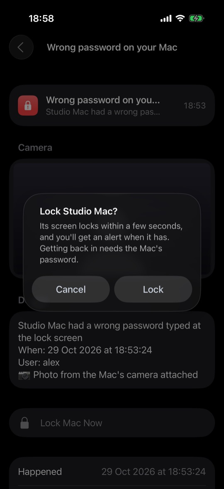

Find out when someone gets into your Mac.
Guard Lock buzzes your iPhone when someone unlocks your Mac, wakes it or tries the wrong password. You can see who was sitting there, and lock it again from your phone.
Download for Mac (free) Get the iPhone app, $1.99
Mac app: free. iPhone app: $1.99, one time. Works with macOS 13+ and iOS 17+.



What it does
Your phone hears about it within seconds whenever the Mac is unlocked, woken up, logged in to or shut down. A wrong password at the lock screen gets an urgent alert, and if you switch it on, a photo from the Mac's camera comes with it.
Unlock, wake, login and wrong-password alerts come with a Lock Mac button. Face ID first, then the screen locks a second or two later.
It also tells you when the lid is opened, the charger is pulled out, or a USB drive or a display is plugged in while the Mac is locked. After a wrong password it can send a few seconds of video too.
From your phone you can take a photo with the Mac's camera, see where the Mac is on a map, or set off a loud alarm on it.
There's no Guard Lock server. Alerts are encrypted on your Mac and go through your own iCloud to your phone, so I can't read them, and neither can Apple.
Setting it up
- Download the Mac app. It sits in the menu bar and uses next to no memory or battery.
- Get the iPhone app and scan the code your Mac shows you.
That's the whole setup. Your Mac and iPhone just need to be on the same Apple Account with iCloud turned on.